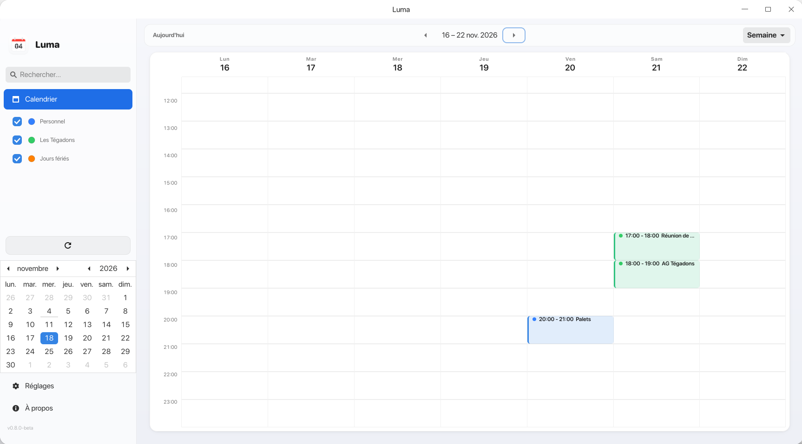
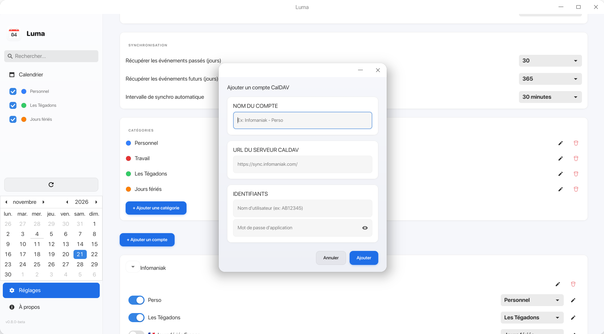
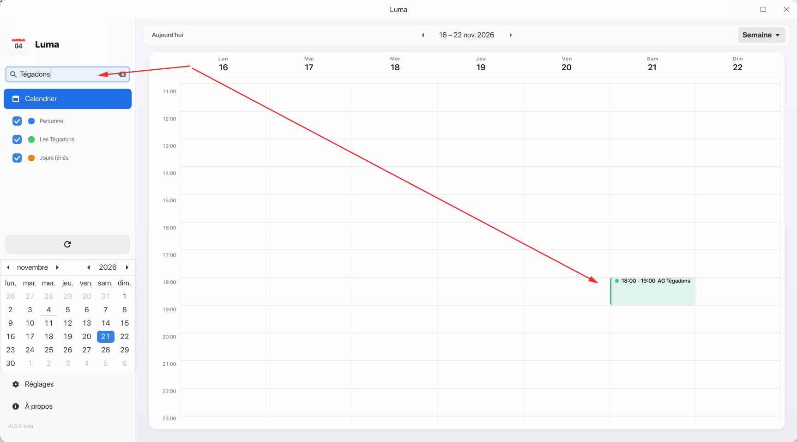
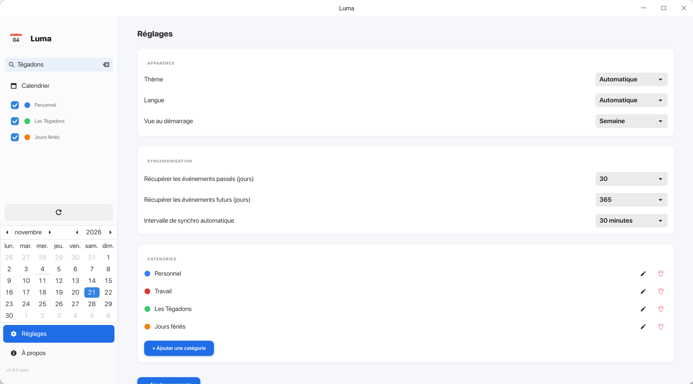

Trois vues, une seule application
Basculez instantanément entre la vue Mois (pour la vue d'ensemble), Semaine (pour planifier) et Jour (pour le détail). Chaque vue est pensée pour être lisible et réactive.
- Vue Mois avec les événements en un coup d'œil
- Vue Semaine avec grille horaire précise
- Vue Jour pour se concentrer sur l'essentiel

Déplacez vos événements en un clin d'œil
Glissez une bulle d'événement pour changer son heure, sa durée ou même son jour. Une ligne de guidage et une surbrillance vous indiquent exactement où l'événement va atterrir.
- Drag & drop dans toutes les vues
- Ligne de guidage au pixel près
- Surbrillance colorée de la zone cible

Synchronisation CalDAV native
Connectez tous vos calendriers CalDAV (Nextcloud, Baïkal, Radicale…) et retrouvez vos événements partout. Les modifications sont sauvegardées immédiatement et synchronisées en arrière-plan.
- Multi-comptes et multi-calendriers
- Abonnements .ics
- Cache local pour un démarrage instantané

Recherche instantanée et rappels
Trouvez un événement en un clin d'œil grâce à la recherche globale. Programmez des rappels pour ne plus rien manquer, et organisez vos calendriers par catégories colorées.
- Recherche dans le titre et la description
- Rappels personnalisables
- Catégories et couleurs personnalisées

Une interface native GTK4
Luma est construit avec GTK4 et libadwaita, pour une intégration parfaite avec Deepin et les environnements de bureau modernes. Thème clair, sombre, et respect de la couleur d'accent du système.
- Thème clair / sombre automatique
- Couleur d'accent Deepin
- Icône dynamique avec la date du jour
